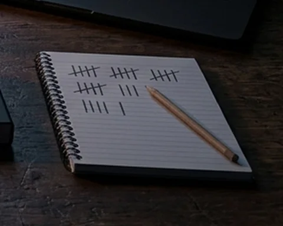

The Smith and the Tailor
Field notes for the CEO: why many deployments are cut before anyone measures the floor, and two rules you can set before kickoff.
The symptom shows in one department. The cause usually sits in another. I measure the whole chain before I cut.
Tell me what you’re seeing See a sample audit
Supply Chain & Operations × Deployment Strategy
Stock the books show and the floor does not hold. Write-offs nobody can explain. Orders shipped wrong, and the overtime to put them right.
Each number says where it comes from: a study, a company filing, my own data, or my own field work.
Count what the floor holds against what the record says.
Take out the loss the count exposes, at its cause.
Stay through go-live until the new way of working holds.
For technology teams, the same work runs in five steps, from the first audit to the handback. How a deployment runs
Every object says one thing about how I work: pick one.
I come to you. The work starts on your floor, and how the visit is contracted, paid and travelled fits on one page.
I walk the floor first, off shifts included. Dust on a rack is stock that has not moved; a sheet taped beside a terminal is a gap the software left.
On your floor I follow your site rules, induction included.
I do not run your equipment or fill a post.
I measure before I trust the record: the rack, the aisle, the pallet, and a blind count of a sample of locations.
Go-live is one cut: the old system closes, the new one opens, and there is a way back.
On your site I use the blade you issue.
What I report, you can check: I record what the screen, the label and the rack show.
In plain sight, with notice on your site. Short clips, never of faces.
I dictate what I see while I am still standing in front of it.
My own notes only. An operator is recorded only if they say yes.

The count goes on paper before it meets the system. Your team keeps the sheets.
At night I put the record and the floor on one timeline. You get the baseline and the list of losses, in the order to fix them.
The desk is an illustration.
Engagements and feesRarely the algorithm. Usually one of three things that were there before the system arrived.
The number people quote, 95%, comes from a 2025 MIT NANDA report, The GenAI Divide: 95% of organisations saw no measurable P&L impact from generative-AI pilots. It is a preliminary industry report, and it covers AI pilots, not ERP or WMS projects. The cause it names is older than AI: brittle workflows and missing context.
I walk the floor first, the 02:30 shift included, and ask what happened rather than what people think. Then I put the record and the floor on one timeline and write the working down, so finance, the floor and engineering can check it. How I diagnose
A three-week field audit, cutover leadership, a fractional operations or deployment lead, and advisory by the hour. Engagements and fees
A 50,000-SKU warehouse-system changeover, an audit anyone can re-run, and the systems I build. What you can check
An independent contractor invoicing in USD from Chile, with remote execution and short business-visitor visits for alignment. Working terms
Field notes for the CEO: why many deployments are cut before anyone measures the floor, and two rules you can set before kickoff.
A bestiary of the go-live: why obeying the system and dodging it answer the same rule, and what a rule looks like when nobody has to carry it.
An executive on your side, named in writing before kickoff, who is not the deployer. Without one, the change after go-live belongs to nobody. Full answer
Because knowing a tool shapes what you see, even for experts. The safeguard is a rule set before kickoff, not the deployer’s open mind. Full answer
Neither by default. Measure the misfit first, sort what the system lacks from what it imposes, and weigh each customization against its upkeep. Full answer
Log twenty system recommendations a month against what the operator would do and what doing nothing costs. If neither ever wins, audit the deployer. Full answer
Because obeying costs them nothing today and questioning has a price. What reduces the error is making people answer for the decision. Full answer
Sometimes: large adjustments tend to help and small ones often hurt. Without a name and a reason, a company cannot learn which overrides paid off. Full answer
Before, and for a reviewer whose view the operator does not know. A reason written after the fact is a defence; one written to please is an echo. Full answer
In one retailer’s audit, 65% of nearly 370,000 records did not match the shelf. A model trained on them is wrong exactly where the record is. Full answer
Often neither. In a public marketplace dataset, 57% of “not received” reviews on delivered orders were written on or before the delivery day. Full answer
About the author · The Deployment Chasm, a manuscript
Based in Santiago, Chile. I take on work in English and in USD in the United States, Australia, Canada, the United Kingdom and Europe.